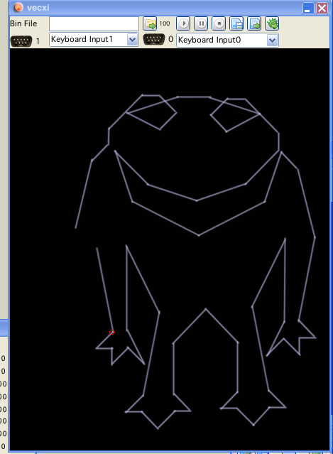
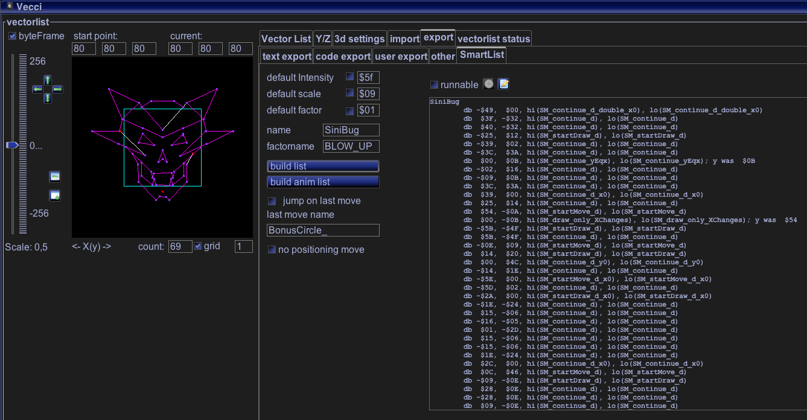

text export
There are different ways you can export vectorlists from vecci.
text export
Text export is the "main" export vecci offers, some other exports are supported (see below) plus there can be user defined exports, with user definitions you can probably export to any imaginable format (if you do know a little bit about java).
Anyway...
The export tab is divided into 2 main sections:
Vectorlist export
Animation/Scenario export
Following features are the same for both sections:
the type of list/lists determine the type of saves that are available.
all export generated is put into the textarea to the right (and into the system clipboard, for immediate access)
if the checkbox "runnable" is checked (befor creating an export) a runnable vectrex sourcecode is generated (and also put into the textarea, source is ment as an EXAMPLE not as clever programming!)
if a runnable source is generated, the button  is enabled, and by pressing it you start your generated vectrex binary in the emulator.
is enabled, and by pressing it you start your generated vectrex binary in the emulator.
you can also change the source in the editor an run it afterwards. If "nothing" happened you entered a syntax error (check the log). If that is so, better copy and paste the text into vedi, there you can access error messages of assi directly
you can chose whether to add a "factor". The factor is realized as a constant within each data statement. The default value for the constant is "1", but you can easily edit that value in the generated sources.
you can chose whether to use a "db" or "fcb" assembler statement (checkbox)
you can chose whether to use a hex or decimal output values (checkbox)
Following types of exports are supported (if possible):
Mov_Draw_VLc_a
This routine moves to the first location specified in vector list,
and then draws lines between the rest of coordinates in the list.
The number of vectors to draw is specified as the first byte in the vector list. The current scale factor is used. The vector list has
the following format:
count, rel y, rel x, rel y, rel x, ...
ENTRY DP = $D0
X-reg points to the vector list
EXIT: X-reg points to next byte after list
D-reg trashed
Draw_VLc
This routine draws vectors between the set of (y,x) points pointed
to by the X register. The number of vectors to draw is specified
as the first byte in the vector list. The current scale factor is
used. The vector list has the following format:
count, rel y, rel x, rel y, rel x, ...
ENTRY DP = $D0
X-reg points to the vector list
EXIT: X-reg points to next byte after list
D-reg trashed
Draw_VLp
This routine draws patterned lines using the vector list pointed to
by the X-register. The current scale factor is used. The vector
list has the following format:
pattern, rel y, rel x
pattern, rel y, rel x
. . .
. . .
pattern, rel y, rel x
0x01
The list is terminated by a pattern byte with the high bit cleared.
ENTRY DP = $D0
X-reg points to the vector list
EXIT: X-reg points to the terminator byte
D-reg trashed
Note!
The BIOS Draw_VLp seems to be buggy, for the examples I provided a working version.
Draw_VL_mode
This routine processes the vector list pointed to by the X register.
The current scale factor is used. The vector list has the following
format:
mode, rel y, rel x,
mode, rel y, rel x,
. . .
. . .
mode, rel y, rel x,
0x01
where mode has the following meaning:
< 0 use the pattern in $C829
= 0 move to specified endpoint
= 1 end of list, so return
> 1 draw to specified endpoint
ENTRY DP = $D0
X-reg points to the vector list
$C829 contains the line pattern.
EXIT: X-reg points to next byte after terminator
D-reg trashed
Looking at the above definitions of these vectorlist types you can gather that not vectorlists can be exported with every list type.
There is one thing all these routines have in common, they all only take relative positioning information. That is the reason why you can export only vectorlists, which can be drawn in one "go".
"In one go" is again relative :-()! Since some formats accept patterns or mode bytes. Using these it is possible to sneak some invisible vectors (pattern = 0) into a list. Thus you can still draw them in one go, but some drawings are simply invisible.
The only possible way to draw totally "disjunct" vectorlists is doing so with a scenario. (You might not use the scenario option with vecci, but drawing two or more vectorlists seperately is just exactly what a scenario does...)
Note:!
The formats: Draw VLx have no way to "place" the vectorlist. The vectorlist is drawn at the "current" place with the first relative coordinate. Keep that in mind, when you wonder why it looks "displaced". (This is espacially queer if you have an animation, these seem to spin around themselfs...)
Note:!
In order to be able to export an animation be sure the "original" single vectors are exportable in the format you wish.
Draw sync list
This routine does not have BIOS pendant, with this type of list output of large non linear vectorlists can be achieved, which additionally are not prone (not very) to vectrex drift.
The list look a lot like the Draw_VL_mode format:
mode, rel y, rel x,
mode, rel y, rel x,
. . .
. . .
mode, rel y, rel x,
0x02
But the behaviour is a bit different. Following mode bytes are supported:
"0x00" move to the y, x (relative)
"0xff" draw to the y, x (relative)
"0x01" zero the integrators, reset offset, move to the designated start of the vectorlist and from there move to the y, x (relative)
"0x02" end marker
As you see with this list it is possible to "resync" the beam in between drawing of the vectorlist.
For the above mentioned resync to be possible the call to the routine must provide additional information, as:
U register, address of vectorlist
X register, the "absolut" position of the vectorlist to be drawn at
A register, the scalefactor for the positioning to the above start point
B register, the scalefactor the vectorlist itself will be drawn with
Examples (runnable) for this type of vectorlist can be generated as for all others.
Note:
The vectorlists build in vecci automatically resync at points in the list which are not connected. One additional parameter can be given to the generation of the list (textfield right beside the button). This is the maximum of vectors that are drawn without a resync (or -1, if only resyncs should be inserted at non connected vectors).
An example of the differences of a synced and not synced vectorlist:

Not synced

synced
Look above...
In order to be able to save an animation in one format, ALL vectorlists of that animation must be saveable in that format!
For animations you can also save in synced "extended" vector format. That format also included the intensity of the vectors as set in vecci.
If you use rotation, be sure to either have a correct startpoint, or use one of the Mov_Draw... or Mode... formats, otherwise it might happen, that you are "rotating" around the wrong point!
Scenarios, since they MUST use positioning, can only ever be saved with the Mov_Draw... or Mode... formats.
Scenarios also make sense if you want to display LARGE vectorlists (say >40 or 50 vectors), since it is very advisable to give the integrators some rest, if you zero them or at least reset them once in a while.

code export
The following section is the same for vectorlists/animations/scenarios, I won't differentiate here.
Code export has the same prerequisites than the text - "Move..." export. Apart from that it differs greatly from text export.
Using the code export options allows you to export your vectors not as DATA statements, but as code, which actually draws vectors directly. If you are old enough to know the concept behind a library called Xlib (from DOS days) than you might recognize this as a relative to compiled bitmaps (although obviously these are no bitmaps!).
The general logic for the codeexport goes like this:
there is a template for "init" and "deinit" the code
there are different templates for "move", "draw", "patterned" draw
the different templates are exported for each vector as they are needed.
Thats all - for large vectorlists (or animations/scenarios for that matter) HUGE pieces of code are generated (but nowadays you can bankswitch for all your needs).
The templates provided work fairly well, but they were done more in the spirit of an example than as well optimized code. You as the user can change them to your needs.
Following templates are used:
"codeGenInit.template"
"codeGenMove.template"
"codeGenDraw.template"
"codeGenPattern.template"
"codeGenDeInit.template"
They (as usually) can be found in the "template" directory! In order to set apropriate vectorinformation following keys are used for replacement in the above files:
%XRELPOS% - x relative position taken from the vectorlist
%YRELPOS% - y relative position taken from the vectorlist
%PATTERN% - pattern taken from the vectorlist
%INTENSITY% - intensity taken from the vectorlist (not used in the provided examples)
%UID% - each call to a template is done with a unique ID, that way you can insure the use of different branch addresses
Here a user can configure (meaning program) his own export routines. A simple example is given, as of now I will not elaborate these settings.
SVG
The SVG export is at the moment very basic, since it only makes use of the "line" command. If you want to reuse the export you are probaby better of if you edit the result in some svg supporting tool (Inkscape?).
The resulting SVG file is always placed in the default vectorlist directory under:
Vide/xml/vectorlist/
Wavefront OBJ
The OBJ export is at the moment very basic, only the entities:
v (vertex)
p (point)
l (line)
f (face) are used.
If you want to reuse the export you can do that for examples with "Blender".
The resulting OBJ file is always placed in the default vectorlist directory under:
Vide/xml/vectorlist/

Smartlist example
Some credits for the implementation of smart lists go to Kristof Tuts. I had similar ideas beforehand - but only after examinig his Vector Patrol code I actually came arround implementing them in this way.
For further explanation please see the blog entry for vide at: http://vide.malban.de/6th-of-february-2018-vpatrol-ingenuity-part-iii
Smart lists can be created and exported as simple lists - or as animations, including code generation. The code generation uses the smartlist.template files in the template directory. In order to use these vector lists you also have to use the accompanying function assortment - otherwise the generated data is useless.
The default size (scale) of the generated list is "9". The size (scale) can not be increased "in game".
At the top of the generated "runnable" executables you find will find a define:
SPRITE SCALE = 9
This is the scale the set of routines use. You can change the scale - but in order to use two different scales in the "compiled" version you have to "double" the set of functions (and rename them).
A smaller scale (than 9) CAN be used with the same functions!
The drawing functions use no "wait" loop anywhere. If a higher scale than 9 is used, the drawing "parts" will overlap and the vectorlists will look more than odd. In order to use higher scales the routines must include "wait" statements (which of course make the routines slower - wait->slower!). The routines as they are, are prepared to generate wait statements for the scale set with SPRITE SCALE.
Ah - well - just look at the routines you will figure out what I mean.
The UI in vecci includes some stuff I prepared for, following things can be done:
default intensity
default scale
default factor - can be set to a number if the checkbox is set
name is the base name for the generated data
build list, generates a smart list output to the textarea of a single vector list
build anim list, generates a smart list output to the textarea of all animation vectorlists
build scenario list, generates a smart list output to the textarea of all scenario vectorlists
jump on last move
if the last vector in a list is a move, than this option enables the "jump" to another smart list, the name given in the textfield below gives the destination name.
Where this might be usefull:
In vectorblade all bonus items have a frame (circular/rectangle etc), with this "jump" I can draw the inner bonus icon and than jump to the "circle" list. This way the circle data needs to be memorized only once and not for all single bonus items.
no positioning move, if not checked the first item in the generated data will be a move to the starting position of the vectorlist
The other items (runnable, run, edit) are the same as for the other generators
Note on Smartlists:
the "code section" of the smartlist is always for one scale only!
If you want to use smartlists for different scales - you have to "double" and rename all smartlist functions and, also the generated names in the data section of the vectorlist
the generated sources for smartlist always include "calibration" (via joystick) whether you want to use calibratioin in your final "product" is up to you though (just remove the calibration code)
Smartlists output quality is "time based". That means for a certain amount the smartlist will output vector list fairly stable. A smarlist with scale 9 might be able to ouput 60-70 vectors stable. A Smartlist with a scale of 70 will probably only output 30 vectors stable - here you have to look for yourself and draw your lists accordingly. Greater scale vectorlists can be output via a scenario, the optimal "cutting" and "glueing" of a good scenario is up to the user though.
If the scale of a smartlist is greater 9 - than wait statements in the form of NOPs are inserted. This can get "out of hand" code wise. For each two scale above 9 there will be one NOP inserted in each smartlist function. If you use a scale of 79 than 35 NOPs are inserted into every smartlist function. There are about 30 SM xxx functions using high scales can easily insert hundredes and hundreds of NOPs. This is neither smart nor efficient. If you want to use smartlists with large scales - manually edit the "wait" statements and insert some more memory saving wait (jsr delayXX or something similar).